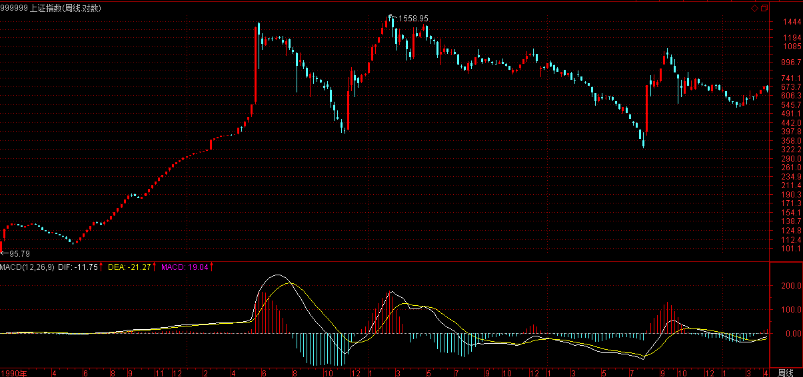
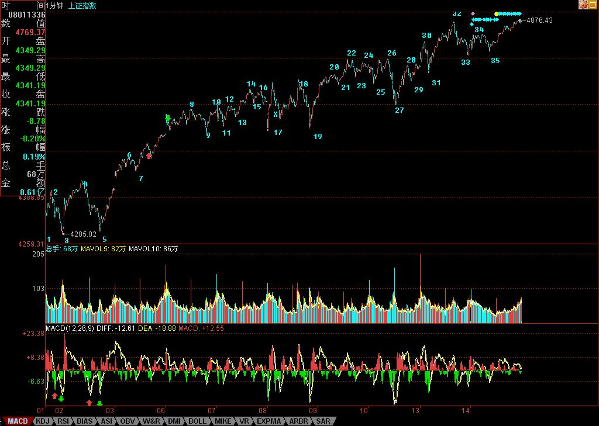

(2007-08-09 23:03:22)
分型、笔、线段，在1分钟图上可以分辨，在月线图上的道理是一样的。
但用月线图分辨，等于用一个精度超低的显微镜，只能看一个大概，但这个大概，却是最实质性的，是一个大方向。【韶山映山红】大级别线段的实质就是指方向。也就是说，只能看，不能用。为什么？★太滞后。月线图上6124的线段到现在也还没有确认。】
下面，就是上海指数的月线图。绿箭头指着的是顶分型，红箭头的是底分型。打“X”的就是该分型不符合笔所要求分型的规范。这里，只要是两条：一、顶和底之间没有至少一K线；二、不满足顶必须接着底、或底必须接着顶。

例如，第一个红箭头和第二个绿箭头之间显然不能构成一笔，【韶山映山红】“顶和底之间没有至少一K线”。】也就是说，这两个，只能取一个：如果取第一个红箭头，那么第二个绿箭头就不是笔中分型，那么第二个红箭头，显然是一个底分型，因此，就形成两个底分型连续的划分，显然，这时候，第一个就不算了，这和前面说取第一个红箭头对着的底分型矛盾。所以，这里，只能取第二个绿箭头，这时候，第一个绿箭头对应的顶分型，自然就不算笔中的顶了。
后面的各分型，带“X”的，都可以按照上面两个原则去分析。
有人可能要问，这样分型的确定，在当下如何完成？
这必须当下去完成。例如，当走势走到第一个红箭头时，显然，第一绿箭头的顶分型也可以暂时看成是确定的顶分型。但当第二绿箭头走出来后，这个问题就有了可修改的地方。
【韶山映山红】当下的判断情况：
走势到第一个绿箭头的顶，顶预判成立。
到第一个红箭头的底，顶和底都成立，形成一笔。
到第二个绿箭头的顶，与第一个红箭头之间不满足成笔的要求，此时如何决断？先假设第二个绿箭头的顶无效，暂时不改变前面的笔，因为后面可能出现合格的顶。
走势继续，没有出现合格的顶，却出现了第二个红箭头的底。这时候进行前面的分析，“因此，就形成两个底分型连续的划分，显然，这时候，第一个就不算了，”为什么呢？因为第一个绿箭头顶下来有两个底，只能选择低的那个。
叉掉第一个底之后，两个顶由于第一个底的舍弃而变得都符合要求，“所以，这里，只能取第二个绿箭头，”这里没有说依据，应该是因为第二个顶更高。
再往后的分析没有说，如果坚持顶最高、底最低的原则，上证指数的月线图就有一个顶和一个底与缠师的不符了。参见下面的上证指数月线级别的笔、线段全景图，两个紫色叉掉的顶底不符合顶最高、底最低的原则。神燕也这样认为。存疑。★而且，这里还违背了顶在底中的原则。★以后研究。】
有人可能要疑问，这样分型是否随时可以修改？
答案是否定的。一旦完成的图形，这修改就不可能了。【韶山映山红】上面的实例已经说明，没有完成的图形，即使是已经成笔，依然可能因为后面的走势而被推翻。】
分型可修改，证明图形没完成。例如，当第二个红尖头分型出现后，前面三个的分型的取舍就是唯一的。
这个分型的可修改性，反而是一个对走势判断极为有利的性质，例如，第二个绿箭头走出来后，这图形未完成的性质就是百分百确定了，但所有图形必然完成，走势必完美。如何才能完美，这样，在理论的框架下，只有极少的可能，而这些可能，就成为综合判断的关键条件。然后根据各级别图形的未完成性质，就可以使得走势的边界条件极端的明确与狭小，这对具体操作，就是极为有利的。【韶山映山红】上证指数月线图的这个案例，这里只有两种可能：继续走高到新顶完成向上笔，或者向下走出新底修改前面的笔。再查看此时的周线图，第二个顶的周线图盘整背驰了，可以预判将向下走出新底。】

注意，这可和概率无关，是百分百的纯理论保证，最终所依据的，就是在本ID理论最早反复强调的走势必完美原则。
其实，本ID的理论的关键不是什么中枢、走势类型，而是走势必完美，这才是本ID理论的核心。
但要真正理解这个关键，可不是看字面意思就能明白的。
显然，目前月线上的第1、2段已经走出来，其中，按照线段里笔的类背驰，1的结束那顶与2结束那底都是极为容易判断的。
上海指数的历史大顶与底，根据这线段的划分，都不是什么难搞的秘密。那么，对现在依然进行中的第3段走势，有什么可百分百确定的呢？
一、显然，这一段要成为段，那至少要三笔，而现在连一笔都没走完，因此，这轮行情的幅度，可想而知。也就是说，即使该笔走完，一个笔的调整后，至少还有一个向上的笔。【韶山映山红】缠师这个时候恐怕也没有想到，这一轮行情就是一笔上、一笔下。从另一个角度看，6124和5178之间的这种线段确认，形成的“古怪的线段”，机理是什么？以后研究。★★★】

二、2245到998点是线段的类中枢，也就是说，只要调整那笔不跌破2245点，那么，将构成一个线段的类第三类买点，这也支持至少要走一笔。【韶山映山红】“线段的类中枢”，这里说的是线段内的笔中枢。笔中枢的角度看，2245是GG，不是ZG。事实上的走势，偏偏还就是一笔跌破，而且跌破了ZG。】
三、笔的完成，必须要构成一个顶分型。而一个月线的顶分型将如何构成？这意味着什么，这个问题就当成是一个作业，各位去思考一下，然后给出这个结论对应的操作策略。从中也可以亲自实践一下，去明白一下理论指导下操作的力量。【韶山映山红】分型在次级别以下级别的表现形式，后面的课程有说。回过头来看历史，无论是6124还是5178，月线级别的顶分型之后再做离开的判断，都会超过了我们的忍受程度。】
最后，再提一个思考题：为什么本ID在7月份要大搞满江红，而8月以后就放手坐轿子，请利用分型的原理给本ID的行为一个技术上的解释。【韶山映山红】6月已经形成了月线级别的顶分型，而且还有日线级别的背驰，6月的长下影跌破了4月K线区间的一半，虽然收上来了，但是7月如果不反转，就可能见顶了，所以要大搞满江红。7月的翻转扭转了局势，开始了又一轮的赶顶，即使再有顶分型，也要看9月的K线，所以8月以后就放手坐轿子，等待下一次的顶分型。】
对不起，好友一早就满了，新浪又不给增加发行额度，所以各位请暂时别再申请好友。有问题可以在帖子里发言，本ID看到，会尽量在文章里安排解答的，当然，尽量有广泛意义的。
先下，再见。
2007-8-9 23:06
(2007-08-10 15:56:27)
昨天已经给了第四拨人一个任务，就是顶住。可以这样说，在外围环境如此恶劣之下，这总算顶住了。当然，站在本ID不厚道的角度，会说他们姿势不够优美。周末消息面，就决定这拨人的短线命运。
技术上，今天5分钟的第三类买点并没有被制造出来，因此依然只能归于中枢震荡的范畴。【韶山映山红】27跌回5分钟中枢区间了。】
【韶山映山红】这时候26是最高点，离开段的划分为什么不是下图所示的17-26？★以后研究。】17形成5分钟中枢8-17之后，17-18-19属于5分钟中枢8-17的线段级延伸震荡，到21的时候形成1分钟中枢18-21，23是她的三买。24没有新高，形成二卖，然后是22-25的同级别向下盘整的回踩，22-25已经形成了返回段，如果没有27的继续下跌，25就是5分钟中枢的三买了。但是22-25内部并没有盘整背驰，所以25这个当下，回踩还没有完成，还不能当下确定25是5分钟中枢8-17的三买。25-26的向上离开，创新高了，力度并不算很弱，所以27这个急跌属于意外。】回踩走势的划分是22-27，可以看到，走势类型的划分，并不完全以高低点为起止的依据。】如果在25那个当下，有盘整背驰，那么三买就是她。但之后如果走出27的新低，说明走势的回踩并没有结束，所以，25的三买被否认了。27跌回了5分钟中枢，所以三买不成立，还要看后续走势。27的下跌属于小级别的非背下跌，之后的反弹又是小转大，所以这一天的收盘，还不能明确后面走势的方向。】
【韶山映山红】20-29的一分钟中枢延伸，满足9段延伸升级的要求了，为什么不做中枢升级处理，然后和前面的5分钟中枢8-17扩张升级成30分钟中枢？★以后研究。】新的中枢震荡没有脱离5分钟中枢8-17的范围，所以是5分钟中枢震荡延伸的一部分，在1分钟走势的基础上做划分，不看线段级震荡。】
下周一，能否制造此买点，将决定短线大盘的上攻力度与强度。当然，偷懒的、看不懂的，就继续5日线，这确实是懒人的懒招数。
个股方面，昨天在回答问题时说了，现在是从大盘50到300的热点蔓延，如果这蔓延能成功，那么大盘的热度还会增加，今天，这迹象已经开始。更重要的是，今天ST大面积启动，也表明短线的投机资金开始蠢动起来，因此，下周的热点蔓延能否成功，是决定行情延续时间的关键。
个股方面，中字头继续是本ID的主力。对那些不启动的中字头，轿夫都应该像777学习。本ID昨天那一通骂还是有点作用的，看看今天的中铝、中国国航，但国航确实恶心，跟着南航后面跑，那李总的军人作风成气了。算了，大周末的，就不想骂人了。其他股票，等大盘炒热后，会逐步补涨。
一到周末，本ID就对股票反胃。各位腐败去吧。
(2007-08-11 16:59:11)
公元2007年8月11日16时47分，经过多次复查，本ID确信，本ID于哥德巴赫猜想已取得重大进展。本ID的兴趣是研究一个新的领域，为此研究出一套新的方法，无意中发现，这套方法对一些整数方面的问题有新的视角，对此进行了零星但不间断的研究。该方法不仅对哥德巴赫猜想有效，对3X+1等问题也有效。【韶山映山红】1742年6月7日，德国数学家哥德巴赫在写给著名数学家欧拉的一封信中，提出了两个大胆的猜想：任何不小于4的偶数，都可以是两个质数之和；任何不小于7的奇数，都可以是三个质数之和。】
由于问题没有完全解决，所以不便公开具体方法。现只公布具体结果的一个大概描述。
根据该方法，偶数被分为两类数，其中第一类数，不存在所要求的对象，这直接对应着哥德巴赫猜想的成立；第二类数，存在所要求的对象，但该对象的数量具体相应数字对应两个不定方程解。可以证明，小于M的第二类数个数的立方/小于M的第一类数个数，当M趋于正无穷时，极限为0。
现在余下问题是，对于第二类数，对应的两个不定方程，都只有有限组解。一旦这个问题解决，对于第二类数的哥德巴赫猜想亦成立。
本ID这方法和原来其他人研究的完全不同，有一个最有力的地方，就是万一有一个偶数不满足哥德巴赫猜想，那么可以用本ID的方法直接构造出来。
现在，问题已经转化为两个不定方式解的个数问题。
当然，现在离最后的成功还很远，因为不定方程解的个数问题也不是一个好研究的问题。其中第一个方程，估计一下，难度较小，应该在最近就能解决；第二个方程，难度较大，只能看运气了，别碰着一个如费马猜想那个那般麻烦的就万幸了。【韶山映山红】费马大定理：当n>2时，不定方程 x^n+y^n=z^n 没有正整数解。】
粗略想了一下，用椭圆曲线算术和模形式方面的工具，似乎也没找到对第二个方程入手的门道，怀尔斯通过证明半稳定椭圆曲线山谷-志村-韦伊猜想成立而搞掂费马猜想，这路绕得惊天地、泣鬼神，可惜没为本ID这方程铺好路，看来路还要自己走。
本ID现在太累了，一直没睡，要去休息。
先下，再见。
(2007-08-12 11:56:07)
本来要上来开音乐会，结果该网站上传总是失败，只好说说数学，说说哥德巴赫猜想。
对于中国人来说，该猜想是最熟悉不过了。但其实，该猜想在数学中并没有太大的位置，与黎曼猜想、朗兰兹纲领等根本无法相比，不过，在娱乐化的中国，能证明哥德巴赫的肯定是大明星，而搞掂朗兰兹纲领的，估计没几个人知道。这就是业余与专业的区别。专业上，从来都是严肃的，没有任何娱乐可言。
像朗兰兹纲领，别说一般人，就算是一般的数学家，基本连命题都看不懂，就别说去搞掂了。而哥德巴赫，由于命题表述连小学生都明白，所以就被很多业余忽悠者所忽悠着，但历史却证明着，在现在数学如此高难度的游戏中，业余者有希望的概率比明天地球撞太阳的概率都小。费马猜想命题够简单了，而那英国人的证明，一般人连一行都看不明白，即使要看懂一行，也要读N年的书。当然，如果真能看懂一行，那至少能看懂N行了，但要完全看懂，全世界估计超不过1000人。
关于哥德巴赫，最出名的是陈的结论，但本质上说，那证明和哥德巴赫没多大关系，用他们那方法去证明哥德巴赫，本ID觉得能成功的几率比明天地球撞太阳的也大不了多少。陈，其实已经把那种方法用到极限了，这几十年来，那种方法基本没有任何实在进展，本ID基本可以断言，那是死路一条。【韶山映山红】陈景润。主要研究解析数论。1973年4月在中国科学院主办的《中国科学》发表《大偶数表为一个素数及一个不超过两个素数的乘积之和》（简称“1+2”），成为哥德巴赫猜想研究上的里程碑。他的成果被称为陈氏定理，是筛法理论的光辉顶点。】
用陈的方法还可以证明，E（X）是不大于X、不能表示为两素数之和的偶数个数，那么E（X）将远小于X^Y，其中Y的一个小于1的正数。关于Y的上限不断被往下修正，最近不知道有没有更新的结果。但这种方法，同样不能实质去证明定理本身，Y无论多少，都不可能去证明当X趋向正无穷时，E（X）的有限。如果哥德巴赫成立，那么一个偶数能表示成素数之和的对数D（n)的渐近公式是T（n）*n/(logn)^2,但这绝对不能保证没有n使得D（n)=0。
本ID昨天所说的对偶数分类的那对象，和具体的素数、分布、筛法等等都无关，是一个复杂的系统给出的不变数学结构，具体什么，当然不能说了，这是本ID方法的核心。本ID这套方法研究的那一对象，就如同群、环、域等等一样，是一个本ID新发现的抽象数学结构，可以应用于无穷的范围里，刚好偶数的素数分解是属于这个结构，因此，如果通过对该结构的研究能最终解决哥德巴赫，就如同那年轻的法国天才，用群、域等抽象结构解决了5次以上代数方程的根式解问题一样，对该抽象结构起着最大的宣传作用。而该结构本身，比那些具体的问题有意义得多。所以，本ID搞哥德巴赫并不是为了哥德巴赫本身，而是为了本ID发现的那新的抽象结构。
如果用该结构的研究而解决了哥德巴赫，那么，就如同现在无数人在研究群、环、域、模、拓扑、纤维丛等等一样，以后也会有无数人去研究本ID发现的这个新的抽象结构的，这才是本ID的本意所在。
说实在，本ID有点后悔昨天太兴奋了，当然，这也无可厚非，毕竟多年的努力有了阶段性成果。后来本ID用股票的观点观照一下，发现本ID还是机心太少，生性纯良。本ID完全可以这样，把那两个不定方程经过等价变形后，给一个悬赏，例如，1000万人民币一个方程，然后全世界无数的人来解这两个方程，估计比本ID一个人去研究，最终的结论会早早得出。这两个方程肯定都只有有限解，只是暂时不知道怎么去证明，一旦证明出来。根据这证明的结论，本ID马上就可以解决哥德巴赫。但现在，这事情已经说出来，都知道这两个方程后面对应着更大的家伙，那肯定不行，本ID的利益无法最大化了。
大概很多数学家看到本ID上面的话都要吐血，他们会反问：“搞科学怎么能这样算计？”
但没办法，本ID身上可不单流着数学、科学的血液，本ID身上的经济、市场血液同样不少，而且从来不屑于掩藏这一点。或者得一大苹果，或者什么都不要，这就是本ID科学研究中的经济与市场原则。这就如同在股票市场中，只能本ID抽庄家的血，而绝对不能相反，这就是原则。这确实比较抠门、变态，但这就是原则。
(2007-08-13 08:29:07)
各位注意
用这个网地http://v35.blog.sina.com.cn/u/1215172700，一切都正常，看来新浪的新版确实需要更多改进。下面的文字继续保留，看电脑高手有没有更好意见。
今天，原来只有13页的所有文章，不知道被谁又改成32页，显示的文章又基本全了，其他分类也一样，但时政经济还是没有。本ID电脑水平连菜鸟级别都算不上，也不想搞明白究竟什么回事情。希望是新浪的新系统有待完善。请问，有什么方法让这用得最多的时政经济能重新显示文章。
对于粉丝无数、发行井喷的公募基金，探讨其发展模式的不可持续，似乎有点杞人忧天。但公募基金经理的跳槽比例在今年达到惊人的40%，已明白无误地表明，如今这种基金经理“快男”发展模式的不可持续。
表面上，公募基金经理跳槽是由于个人待遇以及业绩压力等原因。众所周知，公募基金只收取管理费，相对于私募基金的收益提成模式，其分配上的激励机制明显不如后者。但只收管理费模式意味着旱涝保收，收益提成模式在牛市中可能兴旺一时，而在熊市中，则会引发无数法律、经济纠纷，终不是长久之计。
当然，有人可能反驳说，收益提成模式能使得基金管理者的优劣得到更直接地反映，使得优秀的基金管理者能得到更大的发展，因此，公募基金也可以尝试采取相应的模式。但是，在只收管理费模式中的管理资金大小与收益提成模式中的分成收益大小具有同等的赏优汰劣意义，而公募基金占有制度上的先天优势，由于能够合法面向公众募集，其资金规模具有私募基金所不可比拟的优势，至少在目前的经济、法律、社会结构下，只收管理费模式是获取这种募集优势所必须付出的代价，不仅公募基金不可能采取收益提成模式，而且阳光化的私募基金也只能采取只收管理费模式。
募集范围的大小通常正相关于分配比例的大小，例如，私人股权基金，其募集范围在主要针对二级市场的公募与私募基金之间，一般就采取收取管理费与比例较低提成的综合分配模式。如果收取了管理费，那么像私募基金那样根据收益大小最高分成可达到50%的分配模式是不切实际的。公募基金只收管理费模式的不可改变，决定了其内部的分配机理机制也不可能有大的实质改变，因此，企图通过公募基金分配方式私募化而使其可持续发展是不切实际的。
由于个体利益的巨大诱惑，明星式人才必然趋向于高比例分配激励的私募基金，这对公募基金来说，基金经理“快男”模式将形成一个恶性循环，在私人利益驱动下，更多人会把公募基金当成积累个人资源的平台。一旦从这平台得到个人所期望得到的资源，离开就成了他们必然的选择。现在开始采取的双基金经理制，其实更坏，等于把这跳板上的人又增加了一倍，而这些人，站在长远的角度，对于公募基金来说都是狮子虫。
要解开这个恶性循环，就不能培养“快男”式基金经理，而是要依靠集体、团队的力量。要明星化的不是个人，而是团队。要形成这样一个良性循环，就是让优秀的人才能以在明星团队为荣。这有点类似“智库”的品牌建立，一个“智库”是否优秀，从来都不是因为里面有多少“快男”，而是该“智库”的传统、风格、团队的综合研究力。一个更通俗的例子就是，无论北大、清华曾出过多少“快男”，但北大、清华的名声却依然凌驾于一切“快男”之上。
因此，对于公募基金来说，应该淡化基金经理的个人色彩，突出团体的风格，逐步形成自己的特色与传统。一个好的基金，一个能可持续发展的基金，就应该走金融“智库”的品牌之路。另外，在个人经济利益上，对基金管理公司进行适当的股权创新，加大核心团队的持股比例，这也是必要的。
最后，附带说说8月大盘的走势。7月大盘站住了5月均线并突破了4159点的1/2线，目前该线已经上移到4174点，【韶山映山红】8月的1/2压力线是4174点。】而5月均线也上移到4170点附近，并且7月长阳的一半位置在4136点，因此，4150点附近成了大盘中线能否保持强势的最重要位置。
只要能有效站稳该位置，那么大盘的整体走势就能保持向上拓展空间的能力，否则将引发大盘周线指标的走坏，至少要重新陷入新的大震荡中。
但即使大盘能保持强势，本月也一定要注意大盘过分冲高所隐含的月K线上影杀伤力。
8月是宏观政策理清思路的关键时间，这方面的变动将对大盘走势起着决定作用。
此外，外围股市的走势也会对大盘走势产生影响。全球化社会里，没有哪个股市是可以与世隔绝的。
个股方面，一、二线成分股的行情依然会延续，但要注意升幅过大后的短线震荡风险，而当业绩风险释放后，二、三线题材股会找到重新活跃的动力。
(2007-08-13 15:38:41)
上周末说了，热点会逐步蔓延，从50-300-二、三线，今天，300中已经骚动不断，而二、三线，也已经有不少按捺不住蠢蠢欲动了。
今天唯一不完美的，就是第三类买点还没有走出来，所以，明天的走势依然有变数。最简单的，还是看5日线。
从4200上来的走势，从下图就可以看到，一种走势类型划分已经逐步明朗。1-14是一个1分钟的上涨走势，【韶山映山红】1-14是两中枢的1分钟上涨趋势。】从14-27，是一个5分钟的中枢，27-32，是对该5分钟中枢的离开，该离开与回抽依然没有完成，就看明后两天的发展。如果能形成第三类买点，那么其后就看是否形成背驰性走势，否则，就要在14-27的区间形成30分钟的中枢了。【韶山映山红】前面一直说的是8-17的5分钟中枢，这里改说14-27是一个5分钟的中枢。这里是多义性分析。这样划分5分钟中枢，三买点的位置也相应的提高了，从10的4645点提高到了18的4710点。如果回踩形成的三买不是14-27的，而是8-17的，那么是否不当回事？★★】

个股方面，没什么可说的，还是中字头。N天前，本ID骂中行和中石化连新高都不去太过分，今天，也都基本新高了，这可以看出，中字头就是有力量。当然，所谓的中字头，就是大型国企，只是本ID比较懒，就买其中带中字开头的，这样好记。当然不会有人觉得，如果没有中字头的就不会涨了。原来的那十几只老股里，依然是中字头的000777表现最好，后面，一旦热点蔓延成立，其他都会逐步动起来的。
本ID买股票从来都不是乱买的，8元让各位买000777时，各位当然不可能知道该股基本面将会怎样，但本ID就知道，这就是对基本面的把控能力，光技术面，只是一方面。
【韶山映山红】000777中核科技。】
例如，600649，大概到现在，没人知道这股票里卖的什么药，但如果你去研究一下该股是现在管理层的资本运用的辉煌历史，还有上海市对国企重组的计划，那么，当然就明白，本ID当时让各位在6元买入，不是瞎说的。
【韶山映山红】600649原水股份，2008-05-12变更为城投控股。】
好的剧本，当然是慢慢展开的，本ID经常是在序幕时就告诉各位，所以，如果没耐心的，千万别买本ID说的股票。否则，请问，有谁能把000777从8元拿到现在？大概，除了本ID，来这里的人是不会有了。
（这里原有私人资料已删除，有缘得之，无缘亦不失，梦中游戏，能窥操作之一斑，不枉本ID之冒险一贴。）
【韶山映山红】002149西部材料。2007.08.10上市，缠中说禅在上市第一天买的，当天贴了点成交记录，几小时后删除。这是缠中说禅买的最后一只股票。】

下面是分段图，各位研究去吧，有一个谈判在4点，先下，再见。
(2007-08-13 21:26:14)
周五，本ID是一边叨唠，一边让人报盘买股票。一个41元的股票，本ID最高买到近43元，心里越买越窝火。看看，里面的人，1元的成本，那种PE游戏，本ID也干着，凭什么让本ID贵了40来倍来买？
【韶山映山红】002149西部材料。2007.08.10上市，缠中说禅在上市第一天买的，当天贴了点成交记录，几小时后删除。这是缠中说禅买的最后一只股票。】
今天下午，一个关于PE的谈判，本ID已经决定全面转战PE，当然，撤退是战略性的，本ID决定的原则是：
第一，本ID将不会再买入任何二级市场的股票；
第二，任何成本不为0的股票，本ID都将把成本逐步抛到0为止；
对成本为0的股票，本ID将持有到大牛市结束，有空可以继续玩先砸后买增加筹码的游戏。
本ID已经有了基本的判断，就是谁执PE牛耳，谁得中国资本市场的天下，PE中，除了Pre-IPO等，类似收购基金之类的，在中国依然没有大发展，当然，Pre-IPO这类活动当然不能放弃，但收购基金之类活动，也是可以逐步展开的。在中国，目前类似活动搞得比较好的，是一个生了5个孩子的海龟中男。
当然，完全放弃二级市场是不行的，所以必须留下已经有的根据地。但如果现在不到PE上大发展一把，那么就整天为人做嫁衣裳了。前期，本ID那一顿忙，已经为此铺好了路。
当然，在二级市场中，也有类PE的机会出现，也就是当大的波动让某些大的重组股票达到足够吸引的地步，这也是好的介入机会，在全流通时代，如何用收购基金的模式在二级市场搞上一票，这也是一个有趣的活动。但目前讨论这个问题有点无聊，现在，二级市场之外黄金满地，本ID脑子又没进水，没那闲工夫搞这二级市场了。
以上都是心里话，也是本ID的决定。当然，PE的活，意味着整天要腐败，这是本ID最不喜欢的，当然，有些活可以让别人干，本ID只要有时间，依然会保持每天的解盘。毕竟，对于散户，二级市场是唯一可大面积介入的地方，而且，原始积累也只能靠这地方，山高水长，如果本ID能帮各位一把，也算结一段善缘。
本ID会尽力为之，各位有缘得之吧。
附录：
【韶山映山红】2007-8-13 22:03】
各位请不要胡乱猜疑，本ID关于二级市场20年以上大牛市的判断从来没改变过。本ID春节后说在突破GDP之前，成分股为主的第一段行情一定不会结束，当时，有谁能如此明确的说？又有谁能把20年的大牛市给明确分了段？本ID的这观点从来没改变过。
没有大牛市，PE也白搭，只是现在的二级市场，比起PE，利润太薄，那种能3年翻几十倍的股票越来越难找，但在PE里，一点都不难。
资本都是往利润高的地方跑，本ID也不例外。
本ID对大盘没有任何暗示，短线大盘的走势，看分段图甚至5日线就能判断，谁都没必要预测。
累了，10点了，先下，再见。
刚才试验了一下，发现还是没办法让那时政经济能被显示，本ID电脑就这水平，各位找经济方面的文章，只能出所有文章中找了。
2007-8-13 21:49
[匿名] 深潜江湖 2007-08-13 21:40:22
老师好。大家现在对今天的32-33为什么不是三段有争论。毕竟符合其中的底分型成立的定义。
希望老师能讲讲。【韶山映山红】提问者说的是“底分型成立”，这里能不能成为三段的关键不在于底分型，而在于其后的顶分型是否成立。第二段破坏第一段是第二种情况，所以需要第三段破坏第二段，才能确认第二段破坏第一段。】
另，我对各级别的组合后再寻找区间套特别乱，希望老师能说说。
前面写错了，致歉。
==
请先搞清楚底分型是从哪里开始算起，哪里开始结束。【韶山映山红】提问者所说的三段，第一段成立，第二段不成立，导致第一段延伸，所以还是一段。】在这种前面是下跌的，【韶山映山红】这里说的是提问者的第一段，是下跌的。】对应的第二是上涨的，【韶山映山红】这里说的是提问者的第二段，是上涨的。】其特征序列就是看向下的，【韶山映山红】特征序列向下，就是下图的绿色画线。】这第三个向下的，【韶山映山红】特征序列第三个向下，就是下图的紫色画线。】已经跌破原来第一段的底，【韶山映山红】下图的绿色虚线箭头所示。】怎么能属于第二段里的特征序列？【韶山映山红】如果三段，第二段是第二种情况，看第二特征序列形成顶分型，顶分型还没有形成就又下跌了，意味着这一段的顶分型的区间将比上一段的底还要低，转折没有完成，所以第二段没有形成。】
特征序列的底或顶，首先必须要都属于这个特征序列才行，这是前提条件。【韶山映山红】所谓有效涨破跌破就是这个意思。】
其实，如果第二特征序列没有三个元素，就根本不存在出现分段中第二种情况的可能。【韶山映山红】这里是“第二特征序列”正式作为一个词组出现的地方。第一种情况的破坏分析第一特征序列，第一个元素是转折点之前的，所以只需要破坏笔之后再有一个元素就行了。第二种情况的破坏需要一个完整的第二特征序列分型，而且还要求不能回到原来的区域，以此来证明破坏力量的真心实意，这个要求有点高，这样要求的理由是什么呢？★石猴对这个有不同意见，贴在下面。】
2007-8-13 21:56
这个回答有问题
按线段划分标准，并没有底分型从哪里算起的到哪里结束的要求
只要第二段的特征元素包含处理后，还有顶分型成立，也就是32-33的情况，就是三段
这个图和81课的例图除了方向相反，其他情况是一样的
2008-2-19 17:20
【韶山映山红】石猴质疑的81课配图如下，缠师确实没有发现这个问题。缠师自己也说过，依法不依人，所以这个问题的正确处理需要讲出理由来。当我们把注意力放到分型上面的时候，我们究竟的是分型是否合理，所以这里就出现了舍本求末的现象。在第二种情况应该究竟的是什么呢？就是第三线段对第二线段的破坏，这才是本。显然，这一课的32-33段的情况，和81课示意图的情况，都是第三线段破坏了第二线段，从而证明了第二线段对第一线段破坏的成立。所以缠师在这一课的解说，需要进化到81课的状况。】

新浪网友
博主，在69课中有疑问
请问
69课中，那个类中枢的区间为何是998到2245？
998和2245是第2线段的高低点
如果类中枢是第二线段中的下上下3笔形成的话，那2245和998就是这个类中枢的GG和DD点了
如果不是这下上下3笔形成的话，那就没法能形成ZG和ZD是2245和998的类中枢了
还是说类中枢的形成有一些特殊的地方？
2007-8-13 21:56
新浪网友
“下面，给一个本ID其中一帐号对某只股票买入的一个复制，只给出其中的15分钟，后面的就算了，太多了，占地方，而且没意义。”
－－－－各位看好了，老大贴出来的交易就有17.2W股，按照老大的话，她买的应该远远超过此数目。但是，我们就以17.2W股计算，该交易可以排上2149当天买入的前五名。但是大家去看看2149上周五的交易排名就明白了。
老大的买入金额光是以17.2股计算，买入资金就超过了700万。
2149当天买入在700万以上的仅有2家，第一名，海通合肥1107W，第二名，光大重庆1002W，第三名，国泰君安郑州528W。
－－－－－难道，老大在北京以外也有交易通道？
2007-8-13 22:05
新浪网友
笨，大证券商对核心客户都有分仓服务，在一地方买的股票，可以即时分仓到全国各地，连这都不知道？
2007-08-13 22:18:56
新浪网友
自去年开始进行“创新类”券商分级后，已经不允许这样了－－－除非你依然享有“特权”！
2007-8-13 22:25
新浪网友
自去年开始进行“创新类”券商分级后，为了便于交易数据的真实统计，已经不允许这样了－－－除非你依然享有“特权”！－－而且，为你服务的券商可能就是那个被“草根”券商奋起反击的那个券商了。
2007-8-13 22:31
新浪网友
自去年开始进行“创新类”券商分级后，为了便于交易数据的真实统计，已经不允许这样了－－－除非你依然享有“特权”！－－而且，为你服务的券商可能就是那个被“草根”券商奋起反击的那个券商了。
哪个公司敢这样做,再大的客户也给不了人家每天的正常收入啊?
2007-8-13 22:51
各位请不要胡乱猜疑，本ID关于二级市场20年以上大牛市的判断从来没改变过。本ID春节后说在突破GDP之前，成分股为主的第一段行情一定不会结束，当然，有谁能如此明确的说？又有谁能把20年的大牛市给明确分了段？本ID的这观点从来没改变过。
没有大牛市，PE也白搭，只是现在的二级市场，比起PE，利润太薄，那种能3年翻几十倍的股票越来越难找，但在PE里，一点都不难。
资本都是往利润高的地方跑，本ID也不例外。
本ID对大盘没有任何暗示，短线大盘的走势，看分段图甚至5日线就能判断，谁都没必要预测。
累了，10点了，先下，再见。
2007-8-13 22:03
缠中说禅 2007-08-13 21:49:35
刚才试验了一下，发现还是没办法让那时政经济能被显示，本ID电脑就这水平，各位找经济方面的文章，只能出所有文章中找了。
-------
[匿名] 新浪网友 2007-08-13 21:53:15
缠中说禅博主
你可以尝试着新建一个分类，然后把经济类文章加进去，如果这个新建的分类可以正常显示，那就可以把原来的分类删除掉，而改用新的。或者可以尝试把分类改名，然后再看看情况。
==
谢谢，经济文章太多，一一搞一遍，只能等特别有空的时候。
下了，再见。
2007-8-13 22:05
各位请不要胡乱猜疑，本ID关于二级市场20年以上大牛市的判断从来没改变过。本ID春节后说在突破GDP之前，成分股为主的第一段行情一定不会结束，当时，有谁能如此明确的说？又有谁能把20年的大牛市给明确分了段？本ID的这观点从来没改变过。
没有大牛市，PE也白搭，只是现在的二级市场，比起PE，利润太薄，那种能3年翻几十倍的股票越来越难找，但在PE里，一点都不难。
资本都是往利润高的地方跑，本ID也不例外。
本ID对大盘没有任何暗示，短线大盘的走势，看分段图甚至5日线就能判断，谁都没必要预测。
累了，10点了，先下，再见。
2007-8-13 22:05
袖手旁观
在中国，目前类似活动搞得比较好的，是一个生了5个孩子的海龟中男。
——————————————————————
是不是那个老三届、麻省理工、华尔街、中金，最后搞个所谓第一PE的老吴？南孚一案让人不爽。
不过想想也是，能养5个孩子，估计已经不是中国国籍。服务于国际资本的时候，民族品牌是不是海龟们在意的，谁知道呢。
缠mm兴致已失可以转移战场（三年几十倍的PE项目也不多吧？蒙牛案都不够格），小散们无处可去，还得参考每日解盘。先行谢过。
眼前有一个大局问题：如果牛市第一阶段结束，到第二阶段展开，其间会经过一条怎样的路径？还是如板块轮动一样直接表现在热点切换上？
2007-8-14 08:24
(2007-08-14 15:49:37)
当然，没有阳光下也同样没有新鲜事。今天的走势，唯一的特点，就是没有新鲜事。从上周起，本ID不断强调热点开始蔓延，今天，这热点已经开始燎原。
50-300-二、三线，本ID已经给股票的热点蔓延画出了线路图，现在，不过是按着线路图的一种演绎，正所谓阳光下没有新鲜事。
今天，14-27这5分钟中枢的第三买点35也总算给憋出来了（偶尔看到有问为什么不是九段？九段可延伸成5分钟中枢，可不等于5分钟中枢就一定是九段，这么简单的逻辑关系可别搞糊涂了。）
5分钟第三类买点后，只有两个选择：一、继续上涨直到形成新的5分钟中枢；二、在目前位置附近形成大一级别的30分钟中枢。
现在，关键是热点的蔓延持续，只要这没问题，一切都好办。
站在日线角度，提两个思考题：
1、目前日线的背驰段解除没有？提示，关键是哪段和哪段比，连相比的对象都没分清楚，还谈什么背驰段？更不用说什么精确定位了。
2、4174点的1/2突破后，下一条真正的压力线在哪里？
注意，本ID战略转移，并不会影响博客的一切活动，只是有时候晚上的文章，可能会因为应酬改到早上发，如此而已。而且，本ID现在是战略转移，0成本的股票是不会抛的，没到0成本的，本ID也不会胡乱抛的，没到卖点，凭什么抛？
今天，能在49下买到002149的，可要感谢本ID，某人脑子进水，竟然企图让本ID在50下出来，一开盘就企图打压，脑子有水吧？这股票，本ID会抛至少一半的，但想让本ID今早49以下就抛，简直病得不轻。
【韶山映山红】002149西部材料。2007.08.10上市，缠中说禅在上市第一天买的。这是缠中说禅买的最后一只股票。】
今天可以回答问题到4点半。

新浪这版改得真没法说了，各位将就用，本ID已经有点将就不住了。不过，没法子，本ID念旧，新地方一样有新问题，那就继续吧。
2007-8-14 15:53
[匿名] 新浪网友 2007-08-14 15:54:47
能谈谈对"次级债"的看法吗?
==
这类问题，在本ID关于货币战争的帖子里都说过了。其中一个比喻是这样的，美国这个发动机积炭了，只能换一个新的。新的，可以是一个新国家，例如中国，但美国人显然不乐意。唯一让美国人乐意的，就是全世界人出钱为美国人换一个新的。而从2001年起美国人的所有玩意，就是这种玩意，不管这玩意变了多少名字。
2007-8-14 15:58
[匿名] 新浪网友 2007-08-14 15:56:06
为什么第三买点不是33？
==
如果是33，前面离开的一分钟走势就是未完成的。饿日现在，离开是27-32，回抽是32-35，都是标准的1分钟走势类型。
2007-8-14 16:01
[匿名] 举杯邀明月 2007-08-14 16:01:22
老师,有个问题,就是假如我用5分钟以及更大级别的K线级别操作的话,画图也还是按照笔--线段--中枢这样的同样的方法吧？
另外希望老师能继续股票课程的讲解,别真的离开我们
==
本ID什么时候说要离开了？本ID只是说不再新买二级市场的股票，买了窝火。
请你先把显微镜和被显微镜这两种关系搞清楚。你当然可以只看5分钟图，那等于用一个不太精确的显微镜，难道5分钟图上就没有线段、笔？
用1分钟图上的线段笔，只是一个更精细的显微镜，这并不影响任何级别的操作。
关键是对精确度的要求，但笔、线段等等，对任何精确度下的图，都是必要的。
本ID不是有一课示范了在月线上如何划分笔、线段了吗？
2007-8-14 16:06
[匿名] 新浪网友 2007-08-14 15:52:25
k线n-1区间[8,10]，k线n区间[9,10]，这两k线是否是包含关系？
==
当然是。
2007-8-14 16:08
[匿名] 新浪网友 2007-08-14 16:08:05
如此看空为何不砸盘啊！
==
本ID什么时候看空？至少20年大牛市，目前只是牛市第一阶段，这些观点都无须修正。
本ID现在不会再买二级市场的任何股票，只是因为本ID能通过PE买到更便宜的股票，更大的机会，如此而已。
2007-8-14 16:10
[匿名] 新浪网友 2007-08-14 16:05:39
很想请教博主一个问题：你认为这次中国能否避开日本和东南亚当年最终资产泡沫破裂后经济衰退，百业萧条的后果？或者说退一步说不至于那么严重？虽然中国也曾经经历过80和90年代的两次通货膨胀，但当时中国应该算是一个相对现在来说还比较封闭的经济体，泡沫破裂后的强度或许可以通过内部消化，而现在金融开放之后，情况是否应该和日本、香港当年来比较呢？期望听到你的意见，好象也曾经听你说过一个“年线级别调整”的看法，我认为这是相当有可能的，毕竟这次中国需要面对的是全世界的资金，还有玩钱已经玩了几百年的大鳄们。
==
日本、香港那些怎么能和现在的中国比，现在美国是病人，而在美国病好之前，中国关键是如何去用好化攻大法，让美国就算病好了，功力也被化掉一半。
如果出现世界范围的通货膨胀，那全部人都逃不掉，到时候比的是谁能最快恢复，显然，如果中国自己不当傻瓜，那一定是中国，这里有深刻的产业链上的道理，以后有空写个帖子说说。
只要中国能第一个恢复，那么，发生什么并不重要。如果真有1929年，没人能逃掉，拿着什么货币、什么资产都是废话，这就是资本主义的本质所在，一个游戏而已。
问题不是去逃掉1929年，那不可逃，唯一的区别只是损失大小。能用最小代价活下来，这就是最大的成功，就如同那场把恐龙灭掉的灾难，在那灾难面前，唯一的问题是如何在灾难下生存，而不是祈祷灾难不降临。地球后来的主人，只能在这生存者中。无论国家还是个人，这道理是一样的。
2007-8-14 16:22
[匿名] 新浪网友 2007-08-14 16:11:55
老大，你以前提到到的8月份政策面风险现在解除了么？
==
这还要感谢美国这次的抽风，在这样的国际环境下，谁还敢乱搞，真是活腻了。所以，政策不是万能的，政策不过是合力的结果。但也不是太过分，毕竟，秋后是可以算帐的，当然，现在还夏天，先把夏天过了再说。
2007-8-14 16:24
[匿名] 天眼 2007-08-14 16:21:55
老大,有几个问题我比较模糊,
A.关于k线的包含关系.
一.如果第n-1根K线的高低点全在第n根K线的范围里,那么n-1和n是不是包含关系?
==
这当然是，难道还有什么疑问的？
对于连续包含关系，必须按时间顺序，一个个合并下去。
二.下列情况是不是包含关系?
假设n和n-1 k线的高低点为gn.,dn, gn-1,dn-1 .
1.gn=gn-1且dn>dn-1;
2. dn=dn-1.且gn<gn-1;
3. dn=dn-1.且gn=gn-1;
==
当然是。
2007-8-14 16:29
[匿名] 新浪网友 2007-08-14 16:29:13
14-27形成5F中枢是否不准确？因为14开始的3段的高点不够高？
==
中枢和高点高不高有什么关系？中枢，关键是有重合部分。
2007-8-14 16:30
年年一变三 2007-08-14 16:28:18
缠主，看了你昨天的帖子，我们小散没法参与，但我想600635按缠主的宏观思路，是否应该是只大牛呢？
另问：缠主多次提及636是战略建仓，我只是建早了些，还小套。问缠主不买二级市场的股票也包含636吗？
缠主先别走，贴了三次了，盼回复！谢谢
==
不买就是都不买了，不过600636，本ID在10元上下买了不少，本来是要继续买的，既然都不买了，就都不买，战术服从战略，本ID不买，自然还有别人要买。
【韶山映山红】600636三爱富。】

像600737、中铝、中国国航等等中字头以及原来那十来只，本ID都会继续持有的。没有成本为0的，本ID会找机会变为0，这就是套钱的手段，套出来的钱，都离开二级市场去干PE去，如此而已。
2007-8-14 16:36
对不起，已经4点半了，本ID要先下了，有机会再聊。
再见。
2007-8-14 16:37
[匿名] 新浪网友
2007-08-14 16:36:36
14-27形成5F中枢是否不准确？因为14开始的3段的高点不够高？
==
中枢和高点高不高有什么关系？中枢，关键是有重合部分。
----
我可能没说清楚，因为14开始的3段的高点不够高，使得与后面的六段无法重合？？？
===
临走回答一下，这问题太典型，就是概念没搞清楚。
5分钟中枢，只要3个1分钟走势类型有重合就可以，不是一定要里面的所有段都重合。【韶山映山红】1分钟中枢就是段中枢，在5分钟级别时忽略段中枢的内部结构，也就是忽略段的存在，只看1分钟走势。】
所有都重合，只是其中一个特殊的情况，这叫又线段延伸九段后形成5分钟中枢，在这种情况下，同样可以看成是三个1分钟走势类型的重合。【韶山映山红】和中枢延伸的道理是一样的。】
先下，再见。
2007-8-14 16:40
(2007-08-14 22:42:24)
先给下午那两个问题的答案：
1、目前日线的背驰段解除没有？
当然没有，本次这段要比的，是从去年8月到今年5月29日这段，为什么？因为这段前后两个中枢是同级别的，而今天春节前后那一个不是。从日线图的笔、线段上分可以看出，前后两个中枢是由三笔构成，而春节那个只有一笔，【韶山映山红】这个“日线的背驰段”不是1分钟线段中枢递归出来的日线级别走势，只是“从日线图的笔、线段上”看出来的。不同级别K线图上使用笔、线段分析可以互为佐证。】
当然，仔细的划分，可以从1分钟图上的中枢级别来分辨。【韶山映山红】这个时间跨度大，做1分钟图的工作量太惊人，以后有机会再做。★】
2、4174点的1/2突破后，下一条真正的压力线在哪里？
是2/3线，目前在哪里，各位自己算算。【韶山映山红】八月1/2压力线4174点。九月1/2压力线4189点。八月2/3压力线5089点。九月2/3压力线5109点。】
还有一个问题请思考，日线图上的笔、线段，和一分钟图上的日中枢有什么关系？【韶山映山红】“一分钟图上的日中枢”，是1分钟图上递归到日级别中枢？还是用1分钟显微镜看日线图的那个中枢。 应该是用1分钟显微镜看日线图的那个中枢，当时只递归到了5分钟走势类型。】
【韶山映山红】这个时候，日线图上有了笔中枢，从而形成了笔趋势，至于线段，从998到6124一共也只有一个线段。】
【韶山映山红】站在69课的时间点上看419-801的实盘，日线图上的笔，相当于1分钟图上笔线段递归的5分钟走势，相当于5分钟图上笔线段构成的走势类型，相当于30分钟图上笔构成的线段。缠师认为自己发现了什么？又想告诉我们什么？★缠师应该很清楚，这里的吻合更多的是巧合。问题是，她想传达什么信息？★小级别走势划分要追随大级别走势，没问题，问题是，追随的是走势，而不是大级别的笔线段。★以后研究。】

【韶山映山红】5分钟图的线段和线段中枢的走势划分。线段中枢的趋势背驰+更大级别的盘整+线段中枢的趋势。】
【韶山映山红】30分钟图的笔、线段划分。】
【韶山映山红】日线图的笔划分。】
【韶山映山红】上证指数实盘的日线笔、线段划分图。】
【韶山映山红】上证指数实盘的日线笔线段划分，和30分钟线段，对比图。】

现代人，贪嗔痴疑慢之火盛，被各种诱惑蚕食，身心皆损。不先行调理，不过胡闹而已。现代人，从意根上着手，难以成就。还是先从调理身根开始，这样较为稳妥。
所有人，身上皆病。病分两种，一种是现业所生，一种是宿业所潜，后者，非一切医疗手段可治疗，前者，可于医疗而有所助。但，医疗而愈者，不能断其根，最终，野火而春风，烧之不尽，终为其祸。
病，不离其身，无身，何来其病？去其病，必净其身业，身业不净，百病相随。意、口、身，相缠相续，意、口业不净而身业净，无有是处。净一份身业，即净一分意业、口业，从身根入手，逐一去之。
常人，气脉阻塞，自然百病不离左右。净身业，必先通其气脉。而气脉本通，人自塞之，现代人小聪明而无智慧，必以定法绝其聪明，方使天机流行。
日常，于无人处，关闭一切通讯工具，杜绝一切干扰，双脚微开与两肩宽，全身放松立，下颔微收，双眼眼光回收自然微合，念想足底至横隔膜被气充盈，气从横隔膜处向上，胸腔至头部如一气嘴，横隔膜下气息源源不断送出。
注意，气息送出，皆自然呼吸所致，不用意识调节，而胸腔至头部如一气嘴，则心脑都如不存在。心脑，都是进化产物，古代生物，无心无脑，一样可知可觉，人仿佛必须心脑作用方知其所知，只不过是业力所致。
以上程序，开始时不可持续太长时间，必须达到这种程度，就是一念想，以上程序就马上能完美完成，这样，就无须专门站立，什么姿势、什么时候，甚至在演讲、腐败、419、睡觉时，都是一念而成。而该念可以一念万年，万年一念，该念能随时起止，来去自如。
一般来说，这程序持续一段时间后，都会有病而至，特别那些从来没有的病，突然而至，这是身根发动后，原来潜伏的病根也随着发动。严重者，全身流脓、腐烂不堪，这时候，必须要有正观，一般人到此，肯定都回头而去，或者连回都回不去了，如果没大智慧、大定力，肯定无成。
注意，以上程序，是本ID之法门，效速而高竣，一般人禅理不通，无了生死之大决心，断不可试。
一旦身毒去之七八，则气机一定发动，全身正气充盈，百病不侵。但有二、三分宿病，非此能去，路还长着呢。
(2007-08-15 15:49:33)
先解答一个和打坐有关的疑问，本ID说念想把横隔膜以下气息在横隔膜以上送出，这气肯定不是真正呼吸之气。人体结构里，横隔膜以下哪里有什么呼吸之气？那只是一念，以此一念带动那非气之气之真气。
好，说股票。最近，外围市场鬼哭狼嚎的，弄得全世界的鳄鱼都痛哭流涕。中国市场震荡一下，也很应该。技术上，昨天已经很明确说了，现在，或者继续上涨直到出现新的5分钟中枢，或者就在这里形成一个30分钟中枢，除此之外，别无选择。
今天早上冲高后，一个1分钟级别的背驰就出现，【韶山映山红】这里说的“1分钟级别的背驰”，是指1分钟走势类型构成的17-38的1分钟线段类上涨趋势的背驰。也是最后三段的线段类盘整背驰。】
整个1分钟的上涨，是下图中的从17-38，【韶山映山红】缠师笔误，出图的时候漏掉了38，高点标成了39，所以这里一开始写的是“整个1分钟的上涨，是下图中的从17-39，”后来改正了。70课一开篇所说的改正就是指这里。】

两个1分钟的中枢，37是对最后一个1分钟中枢32-35的第三类买点。【韶山映山红】两个1分钟的中枢，第一个是22-27，后一个是32-35。】
因此，该上涨极端完美，背驰的MACD辅助判断，看5分钟图更为明显。（各位请自己去看，这里的贴图只有200的额度，本ID不能浪费太多空间。在5分钟图中，看对应1分钟图中的走势去比较力度。）这是一个标准的走势，十分教科书。后面的震荡十分正常了。【韶山映山红】下图是1分钟走势图，配5倍MACD模拟5分钟MACD。】
现在，从8开始走势的一种划分也自然当下给出了，就是8-17是一个5分钟中枢，然后17-38是一个1分钟级别上涨。
而从32开始，一个5分钟中枢的雏形也出现，极短线走势，就看这32开始走势的演化情况。

个股方面，请问002149让各位爽了没有？当然，后面的走势和本ID没关系，本ID只在上周五最高买到43元，然后把其中41附近一部分清单在这里放了几个小时。这股票，为什么还有这么多人抢入，最主要是基本面与成长性。
【韶山映山红】002149西部材料。】
本ID在N个月前，强调过中小版成长股的中长线介价值。后来，本ID也告诉过介入了002121，注意，这股票和002149都和600635有关系，那纯属意外。
【韶山映山红】002121科陆电子。】
【韶山映山红】600635大众公用。】
对中小版，一定要看其成长性，而且要有耐心。
注意，任何股票，都不值得追高，包括如002149这样的。
不过，这都是老皇历了，本ID现在不会再买任何二级市场的股票，只会等待机会把成本不为0的的出掉变为0，然后都去干PE去。至于其他股票，本ID说过的任何股票，本ID都持有着，当然，很多都是0成本的，但本ID都会持有到牛市结束。
这前面说过。本ID再强调一次，本ID对大牛市的信心没变，但目前进入成分股泡沫行情的判断也没变。成分股行情结束后，还至少有两轮行情，分别是成长股与重组股带头，这些游戏，至少玩20年，早着呢。
本ID就多累点，PE多点如002149的，让各位在40元买了也不后悔的好股票。
二级市场，咱相信群众。
今天有事要去谈，先下，再见。

本课目录
教你炒股票69：月线分段与上海大走势分析、预判热点在震荡中蔓延宣布：本ID于哥德巴赫猜想取得重大进展不能上传音乐，只好从哥德巴赫说起公募基金经理“快男”发展模式的不可持续热点，如期蔓延中41与1，本ID对二级市场兴趣已失热点蔓延，阳光下没有新鲜事。教你打坐3：打坐前的基本功夫外围因素引发今日震荡